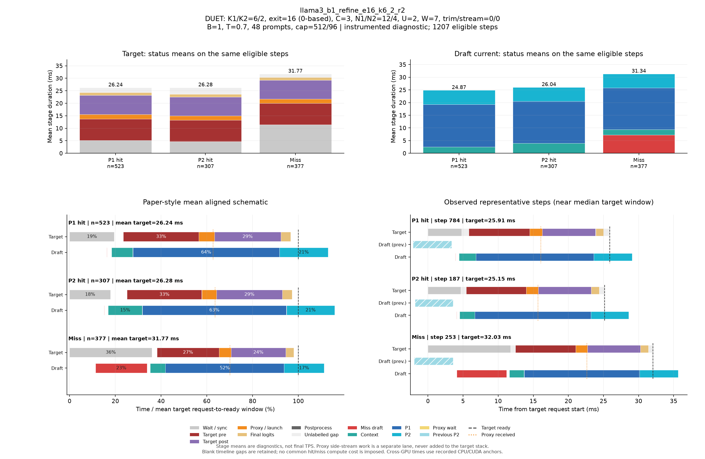

DUET: K1/K2=6/2, exit=16 (0-based), C=3, N1/N2=12/4, U=2, W=7, trim/stream=0/0
| Pass | 용도 | N | B | T | Seed | AL* | Cache hit | TPS* | Raw TPS |
|---|---|---|---|---|---|---|---|---|---|
| 0 | profile-diagnostic | 48 | 1 | 0.7 | 5100 | 2.913 | 68.62% | 89.36 | 88.34 |
Input/output cap: 512/96 · GPUs: 4,5 · draft seed: 0 · source: a3298235676eb40edcdc2f6805b99485ac33e126
PNG · 벡터 PDF · 원본 결과 JSON
세부 trace: 1207 eligible steps. Target 원본 · Draft 원본
제외 수: {"initial": 19, "output_boundary": 46, "capture_or_next": 9}
왼쪽 아래는 상태별 평균 정렬 schematic, 오른쪽 아래는 실제 대표 step입니다. %의 분모는 각 상태의 평균 target request→ready 시간이며 phase overlap은 별도 lane에 표시합니다.

{
"args": {
"target": "/data/chokwans99/models/layerskip-llama3-8B",
"draft": "/home/chokwans99/models_mlsys/Qwama-0.5B-Instruct",
"mode": "duet-tree",
"batches": [
1
],
"temperatures": [
0.7
],
"seeds": [
5100
],
"target_tp": 1,
"prompts": "/home/chokwans99/PSD-mlsys-coverage/results/mlsys_coverage/round5/tuning48.json",
"limit": 0,
"max_new_tokens": 96,
"max_model_len": 2048,
"input_cap": 512,
"k1": 6,
"k2": 2,
"draft_fan_out": 2,
"proxy_fan_out": 1,
"p1_tree": true,
"p1_verify_nodes": null,
"p2_verify_nodes": null,
"exit_layer": 16,
"p1_nodes": 12,
"p2_nodes": 4,
"tree_width": 3,
"p1_roots": 2,
"p2_budget": null,
"tree_root_count": null,
"tree_beta": 0.5,
"tree_proxy_threshold": 0.01,
"tree_conf_threshold": 0.03,
"root_source": "complement",
"root_normalization": "full",
"root_overlap_mix": 0.25,
"memory_fraction": 0.45,
"ignore_eos": false,
"greedy_only": false,
"audit_preemption": false,
"ragged_limits": false,
"tree_calibration_dir": null,
"preflight_test": null,
"output": "/home/chokwans99/PSD-mlsys-coverage/results/mlsys_coverage/round5/llama3_b1_refine_retry/llama3_b1_refine_e16_k6_2_r2.json"
},
"engine_kwargs": {
"num_gpus": 2,
"max_num_seqs": 1,
"max_model_len": 2048,
"max_num_batched_tokens": 2048,
"gpu_memory_utilization": 0.45,
"speculate": true,
"draft_async": true,
"greedy_only": false,
"jit_speculate": true,
"speculate_k": 8,
"async_fan_out": 3,
"duet_p1_tree_policy": "on",
"duet_p2_tree_policy": "on",
"draft": "/home/chokwans99/models_mlsys/Qwama-0.5B-Instruct",
"duet_enabled": true,
"duet_exit_layer": 16,
"duet_phase1_k": 6,
"duet_phase2_k": 2,
"duet_draft_fan_out": 2,
"duet_p2_tree_max_nodes": 4,
"duet_p2_tree_verify_nodes": 4,
"duet_p1_tree_max_nodes": 12,
"duet_p1_tree_verify_nodes": 12,
"duet_tree_c_tensor": 3,
"duet_p1_roots_per_position": 2,
"duet_p2_budget": null,
"duet_tree_root_count": null,
"duet_tree_beta": 0.5,
"duet_tree_proxy_threshold": 0.01,
"duet_tree_conf_threshold": 0.03,
"duet_root_source": "complement",
"duet_root_normalization": "full",
"duet_root_overlap_mix": 0.25
},
"env": {
"CUDA_VISIBLE_DEVICES": "4,5",
"SSD_CUDA_ARCH": "8.9",
"SSD_ATTN_BACKEND": "auto",
"SSD_DIST_PORT": "29808",
"OMP_NUM_THREADS": "4",
"SSD_SEED": "0",
"SSD_CHAIN_PROXY_GRAPH": "1",
"SSD_FAST_VERIFY": "1",
"SSD_BATCHED_PROXY_GRAPH": "1",
"SSD_DUET_EXIT_REPLICA": "0",
"SSD_ASYNC_PROXY_SEND": "1",
"SSD_PROXY_STREAM": "0",
"SSD_BATCHED_TREE": "1",
"SSD_TREE_EXPANSION_POLICY": "reach_gain_frontier",
"SSD_TREE_REACH_CALIBRATION": "/home/chokwans99/PSD-mlsys-coverage/results/mlsys_coverage/round4/calibration/reach.json",
"SSD_TREE_GAIN_CALIBRATION": "/home/chokwans99/PSD-mlsys-coverage/results/mlsys_coverage/round4/calibration/gain.json",
"SSD_DUET_MISS_K": "4",
"SSD_TREE_FUSED_MATH": "1",
"SSD_BATCH_TREE_BULK_EXPORT": "1",
"SSD_TREE_PARALLEL_INSERT": "0",
"SSD_PROFILE_DUET": "1",
"SSD_PROFILE_DUET_MAX_EVENTS": "100000",
"SSD_TREE_SHAPE_METRICS": "1",
"SSD_PROFILE_DIR": "/home/chokwans99/PSD-mlsys-coverage/results/mlsys_coverage/round5/profiles/llama3_b1_refine_e16_k6_2_r2",
"SSD_HF_CACHE": "/data/chokwans99/models",
"SSD_DATASET_DIR": "/home/chokwans99/PSD-mlsys-coverage/results/mlsys_coverage/round5"
},
"effective_features": {
"fast_verify": true,
"batched_proxy_graph": true,
"exit_replica": false,
"jit_speculate": true,
"duet_jit_short": true,
"miss_depth": 4,
"miss_width": 1,
"tree_fused_math": true,
"tree_parallel_insert": false,
"bulk_export": true
},
"resolved_env": {
"SSD_CUDA_ARCH": "8.9",
"SSD_ATTN_BACKEND": "auto",
"SSD_DIST_PORT": "29808",
"SSD_SEED": "0",
"SSD_CHAIN_PROXY_GRAPH": "1",
"SSD_FAST_VERIFY": "1",
"SSD_BATCHED_PROXY_GRAPH": "1",
"SSD_DUET_EXIT_REPLICA": "0",
"SSD_ASYNC_PROXY_SEND": "1",
"SSD_PROXY_STREAM": "0",
"SSD_BATCHED_TREE": "1",
"SSD_TREE_EXPANSION_POLICY": "reach_gain_frontier",
"SSD_TREE_REACH_CALIBRATION": "/home/chokwans99/PSD-mlsys-coverage/results/mlsys_coverage/round4/calibration/reach.json",
"SSD_TREE_GAIN_CALIBRATION": "/home/chokwans99/PSD-mlsys-coverage/results/mlsys_coverage/round4/calibration/gain.json",
"SSD_DUET_MISS_K": "4",
"SSD_TREE_FUSED_MATH": "1",
"SSD_BATCH_TREE_BULK_EXPORT": "1",
"SSD_TREE_PARALLEL_INSERT": "0",
"SSD_PROFILE_DUET": "1",
"SSD_PROFILE_DUET_MAX_EVENTS": "100000",
"SSD_TREE_SHAPE_METRICS": "1",
"SSD_PROFILE_DIR": "/home/chokwans99/PSD-mlsys-coverage/results/mlsys_coverage/round5/profiles/llama3_b1_refine_e16_k6_2_r2",
"SSD_HF_CACHE": "/data/chokwans99/models",
"SSD_DATASET_DIR": "/home/chokwans99/PSD-mlsys-coverage/results/mlsys_coverage/round5",
"SSD_FORCE_SPLIT_K1K2": "1",
"SSD_DUET_JIT_SHORT": "1",
"SSD_SHM_NAME": "ssd_2468662"
},
"runtime_source_sha256": {
"ssd/ssd/__init__.py": "f1a221b38f55b42ef0619cba48a411acbbd1965c4845b4643f77443b7ce77950",
"ssd/ssd/config.py": "ec9ffe1c84257a2e2ec10c39995340f8941f9f3c400c48c18cfa7c3e4db3b220",
"ssd/ssd/engine/block_manager.py": "05d873619b419d31f47b4be4025bc7c9f11759f5f0bc3f65fbff3a1e8f94660a",
"ssd/ssd/engine/draft_runner.py": "cdf793b4718e576bcc10a638fcff577eef9cf21cc1f38a9fc27c333c3cfe5cee",
"ssd/ssd/engine/helpers/batch_tree_common.py": "739feeb975c20d0adbdae51735b8983aa6cae8b59d6237b285db0c766d558f27",
"ssd/ssd/engine/helpers/batch_tree_draft.py": "f361030685350183884cc55b9058945515bb00da53fc86541f7902bfd2138528",
"ssd/ssd/engine/helpers/batch_tree_forward.py": "0c6079d2bdbf7ecc000b2a98b94b49b1942939d34ada80b15f57510de8a20940",
"ssd/ssd/engine/helpers/batch_tree_inputs.py": "c0a05d13ba0e63ecbc920425ddd6a98dc60001d93d73085e75d2d4a9b110a066",
"ssd/ssd/engine/helpers/batch_tree_roots.py": "ad3c4e772392c1043284ac4912d606543f3fd76167135b73e4f72a700e6820c7",
"ssd/ssd/engine/helpers/batch_tree_sampling.py": "46f36658cb189bc080ae0d4b8561f84662290facacccf6600f129eb6e93ee66b",
"ssd/ssd/engine/helpers/batch_tree_verify.py": "2da945efe3ba4b2673377a2f5c497528ab0c6cf4d7fd7edfbdb23b6c9c619ede",
"ssd/ssd/engine/helpers/batched_proxy.py": "6ed4f9b85ff8cf9c24b7ad43a1b7377d08123eeef5307366a373dacda184da86",
"ssd/ssd/engine/helpers/batched_tree_executor.py": "098d64cad2d20d96091631f6bc91da73b1e893ec400c3431a4ed68d007a9ef45",
"ssd/ssd/engine/helpers/cudagraph_helpers.py": "0436aec61d05d0b79696a48665042e364f3f4c50d853b68dc424e435b54be0c9",
"ssd/ssd/engine/helpers/e0_trace.py": "23ecd9bce2587cbef3f99c8894964c0d9642d33d372bd7be4954a5a2840a142e",
"ssd/ssd/engine/helpers/mask_helpers.py": "8ada4e709a6ab310ee920a7176b3684f89860022fc659442f6cb02ed5fb87d88",
"ssd/ssd/engine/helpers/p1_tree.py": "f48ae6b01e593d2598262b34007a6b58dde9e57e94138dde62f81d5526637398",
"ssd/ssd/engine/helpers/p2_tree.py": "73b0a512d834ab3a4608d9cd898b13b32630dd3b914b49e753c1116ac0640b41",
"ssd/ssd/engine/helpers/p2_tree_executor.py": "cfb04f959fd08baf3819a688a907cac4e3071a2727085ea08ca089b50a21e82e",
"ssd/ssd/engine/helpers/packed_tree_forward.py": "b903d6fe4d1fe18f95f6540f488acf40d469154100239429256eace61b1d7e76",
"ssd/ssd/engine/helpers/packed_verify.py": "a50ff24e93324840783b60102bfaeb3786711f05f64bd897708c779535c1820f",
"ssd/ssd/engine/helpers/root_policy.py": "5e3a8e2f9b2fe43fec52eb9e80fe59cb0d28177122f7e75c823c5ffd20aee718",
"ssd/ssd/engine/helpers/runner_helpers.py": "bfb570d8e018ee296a6c2a8c3c9e75919fd0eb1beb288ceb80121ad116419bf2",
"ssd/ssd/engine/helpers/speculate_types.py": "2929b5f3a176d04b6a4b01f092b224ad733dfda10a647bb73801cd346441ae91",
"ssd/ssd/engine/helpers/tree_expansion_policy.py": "47f818d1b8f284e56813af294723f6a934c3da0502b9ae4e611b54ba6fb85dac",
"ssd/ssd/engine/helpers/tree_fused_math.py": "930a1215363a3b6f878cbc4a71c3f59293f46aa2eab3c4938e5bb51e95868d2e",
"ssd/ssd/engine/helpers/tree_gain_allocation.py": "6f32c6a7b69272c1b42992d95c546bfd3980ccd71af3b3346e9df61977907b6a",
"ssd/ssd/engine/helpers/tree_host_topology.py": "86d0deab4da2932540a108c4c2b3560b8634837e71ba23783375c2001e4cf81c",
"ssd/ssd/engine/helpers/tree_layout.py": "4e5e47c54a4efd5a30ae8c528e1d2d9493d12aa5605c0e65c2f86ba874805be1",
"ssd/ssd/engine/helpers/tree_rerank_gpu.py": "e4a8bff8828f983d6eb407504f87f2a9edf08a1750449fe46565e661f892b734",
"ssd/ssd/engine/helpers/tree_topology_gpu.py": "3a6cf8796faabbe8adef56deedf8956c1cf252a31e0491f3b71a8544bdcf89af",
"ssd/ssd/engine/llm_engine.py": "b0081876ef6470f91fa562acc0317074a85afa9aec8322182bda7749153db00f",
"ssd/ssd/engine/model_runner.py": "5fa9e910f38538c276a151113fc490be9c75ae9af2bf35ba6eaa5513b237a421",
"ssd/ssd/engine/scheduler.py": "52a36e8bb2abc26f775562a39bd95ea6cc8c70650e6193ddaa0fad762afb8ae4",
"ssd/ssd/engine/sequence.py": "6894715ef142074b118bfa3018b10826d2748518e9c8b71291064eb99fae9bd9",
"ssd/ssd/engine/speculator_async.py": "cd16395d5e5d7380d29f5a27e1495b6a40758c0452ce2cb40d996e2c3271c114",
"ssd/ssd/engine/speculator_sync.py": "30487afa7f5027735ebd752ca1a53003f1d56350f503ea91931ef64e7aab115e",
"ssd/ssd/engine/step.py": "525d3022561c9eee96ec076032bb27e281af744feb739ddc17e52344a9cafe8f",
"ssd/ssd/engine/verifier.py": "f6795547f278628312d2dd5ab0a28e9f34489b8e6d02038566a65fa3190a0928",
"ssd/ssd/layers/activation.py": "13d88b460e7610df28c6a7c719dd8bf21c5c59ae0f85c94d505d499215618a82",
"ssd/ssd/layers/attention.py": "bbafa69d9b52dedf81542f2c3227b7f061de11c679a6681a16b0c137ccfc672b",
"ssd/ssd/layers/embed_head.py": "b896a56b908d75c8f30462b0b1a4ce634276ddb41165fdaa0220c55a2ddf7257",
"ssd/ssd/layers/fi_attn.py": "4b0a275d020c1c3ce37f4e2a6c04bff12577d6f11feec7d79959652300fc9a0c",
"ssd/ssd/layers/layernorm.py": "a076c8d2e31d2597119d8504a69afd8711b41a29b5ccb7e1bf111a6c7277400e",
"ssd/ssd/layers/linear.py": "82c096262013516c5f0a43f7c28f23aa6db6b14f52cbe1ce1dacc5f9d5c4b0b6",
"ssd/ssd/layers/rotary_embedding.py": "1bcca21cf5e4d81c11a5c55d59a6033874c4e6a0003cc4ae8e1aa6165976a723",
"ssd/ssd/layers/sampler.py": "df22591a229ae5c2f62d4797707470ebccb8e55f7064577bc24a656ed797f213",
"ssd/ssd/llm.py": "496950f31428f674b70e8e137e029aa16dd82fdc8d8b8cc76f9ebdce86f7f653",
"ssd/ssd/models/eagle3_draft_llama3.py": "0d6e713a419cf884fc85984f9a2a6de520119032075a7c99158e0df7e2faca84",
"ssd/ssd/models/llama3.py": "ac801bd73e999f04a6fc862ca1d49bc94c88315456cfb6cb1215a503bcc5e07d",
"ssd/ssd/models/qwen2.py": "6804e3662a173368632e5f05b9893cc0cd28a61ac9bd25dbe8cd6f387ca0d1ca",
"ssd/ssd/models/qwen3.py": "535495bf69933fd9c677275453b801189e2c3c78a94fcc5133fc65b88c9f69c7",
"ssd/ssd/paths.py": "72c52420daaf6d457c60235617efc3f8b1e3ae208a35f3bc45438adc9d7e01ac",
"ssd/ssd/quant/__init__.py": "a69f0de0a516ba2bf9e13680b75b8f5d538c2eb281b095662ed1515f8b0f8698",
"ssd/ssd/quant/adapter.py": "fbb1ce4a198a585c31b0102555d1f84d18b09b0de1b90a5808d93ec8ff7ac271",
"ssd/ssd/quant/awq_calibrate.py": "116807eca0a3e4e001aa24a3344031416e4060a6c1b2e39f59829fba09484126",
"ssd/ssd/quant/build.py": "37f9c72ac69af213f2720c86faf380b8a46baaad0b98bf5f2e3c7fa9b3fbc43c",
"ssd/ssd/quant/config.py": "080c327b2297d0905f8fddc8d994aa7b9dc1086d7703d951471d48cea8723a1d",
"ssd/ssd/quant/importer.py": "c8990b69bc9e4e152e7e80b7f08f273c6a4652c1f7e95a8247f85e50030f4f92",
"ssd/ssd/quant/init_context.py": "6aa3dc3f6e95d8902fa7244d0010110b6fcf1ffdccedd6eaa389204339fc214f",
"ssd/ssd/quant/io.py": "f44f98a57351ff1063b7423d2f8390a565a30796fd6c3beaeaa8825f906e66b5",
"ssd/ssd/quant/loader.py": "14f901b1f53a3650be7eff497f626469e2b1fbc487202c639d33c8dd4c9047fb",
"ssd/ssd/quant/marlin.py": "4f1996e9f63d7109e92a3a7ec5350069ba67d7659f2149e99b84ca3c6626b241",
"ssd/ssd/quant/marlin_utils.py": "f64ec8d7ec8260556abd21e229567971a928882f14b93d288a6732d55c12fc90",
"ssd/ssd/quant/naming.py": "7ba73900af5e6d6fa2d1907bd2611625fc72f28a1fb9ea4834cd9a45901632d6",
"ssd/ssd/quant/pack.py": "b7dd683b7cdbfbb6f4ce1e13a51a72240a8dc3a35b7ed652dc664d26bb384711",
"ssd/ssd/quant/state.py": "82cb1050a3b1776765df7ad8f6c59c23a86ac8d1d4cc3c974cded7f8e762f806",
"ssd/ssd/sampling_params.py": "7f79868c4ca115bb18e017411a6c5545f354aa858aa0b8076aafb756d0785032",
"ssd/ssd/utils/async_helpers/async_spec_helpers.py": "0d70779098c5051fcba5d3add5ff0b7896139f1b7789babe701a8df6eaa40f24",
"ssd/ssd/utils/async_helpers/duet_policy.py": "1fb3e1ec1c41a9cda5f531f8c732b09145c7d87ea79d74c331b8176f11f22aaf",
"ssd/ssd/utils/async_helpers/nccl_pack.py": "6330e785f3e81acffe25a82061d3098f7834ad3c2d07bb071d79ed9923b18dc1",
"ssd/ssd/utils/async_helpers/tests.py": "6491ced36a2a6f06d8cf411204b1190d2ca0bc700cd0becf79c3f4cd8abcd87e",
"ssd/ssd/utils/context.py": "ce55eb45f00c91412946dd1c96f5c8f972372dd4c8069770c48e120773f301fc",
"ssd/ssd/utils/int8_debug.py": "9a71dbf2b997a9c8d9b776cc3659c8dbf32ce5411eb5cedb4a73368cee60d3d7",
"ssd/ssd/utils/loader.py": "c008eac34810772e8d9f51da896c00867481f3e1a0e6f725e0d06599c0aab59e",
"ssd/ssd/utils/misc.py": "1084b630f174d651b78b01c4ba2dff147f18d3cf52a200704b4b9eab2b72b66c",
"ssd/ssd/utils/quantize.py": "c0ee73d55f3781eba88007325d5e9e53e66ad952e0e8f19143aa8c50bc39f406",
"ssd/ssd/utils/verify.py": "0cf11b9ba19a73e9c39087fccde43071464c6f3b964e00081ebadc747ef142a4",
"ssd/ssd/utils/verify_fast.py": "23b05b7e5032fe72c8f2ef5bd7a69aa874818b08b52ea7fc0344a54c76ea28d9",
"ssd/bench/mlsys_campaign.py": "059b6316ba33e867e1fcf099a8180c186fa70b916692eca386d2a4a347b0f26f",
"ssd/bench/mlsys_coverage.py": "70b2afaf05bbbd5760c2a4f96f801976479209ca1d7a8f9eb8598139e686bdbc",
"ssd/bench/mlsys_greedy_audit.py": "b9815fd03ded7f30f7c0408629782156e73f5ceaab9f0b3b720956f5c00da141",
"ssd/bench/mlsys_preemption_audit.py": "f891ff5a69a59fb8c93e7952f9d48ac16adb7fef074763089f14d4505ecad80d",
"ssd/bench/mlsys_summarize.py": "0235aa2b56eb59c41c429351d77e90e16c52ccdf58c43e3578dd03df0f6095bd",
"ssd/bench/mlsys_tree_observer.py": "8c18248c9ef1953e2e821613099f14d155978540536939288d4fb2aa897c6263",
"ssd/bench/mlsys_verify_bench.py": "3ddc36197874d239f41a1c135570d4d7a0940d615d3d396299bae46e377bce2e"
}
}{
"groups": [
{
"status": "P1 hit",
"n": 523,
"mean_target_ms": 26.24103540353064,
"mean_decode_ms": 26.28635806004814,
"mean_intervals": [
{
"lane": "Draft current",
"label": "Context",
"start": 4.797696838871243,
"end": 7.244181025324543
},
{
"lane": "Draft current",
"label": "Miss draft",
"start": 4.250772359038402,
"end": 4.294210759449188
},
{
"lane": "Draft current",
"label": "P1",
"start": 7.266932297391143,
"end": 24.053722397091285
},
{
"lane": "Draft current",
"label": "P2",
"start": 24.058868490259233,
"end": 29.65025737089591
},
{
"lane": "Draft current",
"label": "Proxy wait",
"start": 24.05541598591704,
"end": 24.05717303283356
},
{
"lane": "Target",
"label": "Final logits",
"start": 24.224203259265675,
"end": 25.345693805705523
},
{
"lane": "Target",
"label": "Postprocess",
"start": 26.221128858982034,
"end": 26.24103540353064
},
{
"lane": "Target",
"label": "Proxy / launch",
"start": 14.81926123772251,
"end": 16.607400383593703
},
{
"lane": "Target",
"label": "Target post",
"start": 16.609237735631588,
"end": 24.22225013791261
},
{
"lane": "Target",
"label": "Target pre",
"start": 6.167665337969194,
"end": 14.817400550751112
},
{
"lane": "Target",
"label": "Wait / sync",
"start": 0.0,
"end": 5.112837801471951
}
],
"components": [
{
"lane": "Draft current",
"label": "Context",
"mean_ms": 2.4464841864533,
"present_steps": 523,
"population": 523
},
{
"lane": "Draft current",
"label": "Miss draft",
"mean_ms": 0.043438400410785276,
"present_steps": 523,
"population": 523
},
{
"lane": "Draft current",
"label": "P1",
"mean_ms": 16.78679009970014,
"present_steps": 523,
"population": 523
},
{
"lane": "Draft current",
"label": "P2",
"mean_ms": 5.5913888806366785,
"present_steps": 523,
"population": 523
},
{
"lane": "Draft current",
"label": "Proxy wait",
"mean_ms": 0.0017570469165167435,
"present_steps": 523,
"population": 523
},
{
"lane": "Target",
"label": "Final logits",
"mean_ms": 1.1214905464398472,
"present_steps": 523,
"population": 523
},
{
"lane": "Target",
"label": "Postprocess",
"mean_ms": 0.01990654454860359,
"present_steps": 523,
"population": 523
},
{
"lane": "Target",
"label": "Proxy / launch",
"mean_ms": 1.7881391458711935,
"present_steps": 523,
"population": 523
},
{
"lane": "Target",
"label": "Target post",
"mean_ms": 7.613012402281023,
"present_steps": 523,
"population": 523
},
{
"lane": "Target",
"label": "Target pre",
"mean_ms": 8.649735212781916,
"present_steps": 523,
"population": 523
},
{
"lane": "Target",
"label": "Unlabelled gap",
"mean_ms": 1.9359137501361037,
"present_steps": 523,
"population": 523
},
{
"lane": "Target",
"label": "Wait / sync",
"mean_ms": 5.112837801471951,
"present_steps": 523,
"population": 523
}
],
"mean_markers": {
"Final logits": 25.345693805705523,
"Target ready": 26.24103540353064,
"Proxy received": 16.45646389902892
},
"representative": {
"step_id": 784,
"status": "P1 hit",
"target_ms": 25.91015601158142,
"decode_ms": 25.95437504351139,
"source_counts": {
"1": 1
},
"physical_queries": 13,
"max_valid_nodes": 12,
"unlabelled_target_ms": 1.949218988418579,
"intervals": [
{
"label": "Wait / sync",
"start": 0.0,
"end": 4.773437976837158,
"lane": "Target",
"original_label": "target_spec_wait"
},
{
"label": "Target pre",
"start": 5.828125,
"end": 14.472656011581421,
"lane": "Target",
"original_label": "batch_target_pre"
},
{
"label": "Proxy / launch",
"start": 14.472656011581421,
"end": 16.26953101158142,
"lane": "Target",
"original_label": "batch_target_proxy"
},
{
"label": "Target post",
"start": 16.26953101158142,
"end": 23.87890601158142,
"lane": "Target",
"original_label": "batch_target_post"
},
{
"label": "Final logits",
"start": 23.882812976837158,
"end": 25.00390601158142,
"lane": "Target",
"original_label": "batch_target_final_logits"
},
{
"label": "Postprocess",
"start": 25.89453101158142,
"end": 25.91015601158142,
"lane": "Target",
"original_label": "target_postprocess"
},
{
"label": "Unlabelled gap",
"start": 4.773437976837158,
"end": 5.828125,
"lane": "Target",
"original_label": "derived_gap"
},
{
"label": "Unlabelled gap",
"start": 23.87890601158142,
"end": 23.882812976837158,
"lane": "Target",
"original_label": "derived_gap"
},
{
"label": "Unlabelled gap",
"start": 25.00390601158142,
"end": 25.89453101158142,
"lane": "Target",
"original_label": "derived_gap"
},
{
"label": "Miss draft",
"start": 3.8755321502685547,
"end": 3.9224071502685547,
"lane": "Draft current",
"original_label": "batch_miss_draft"
},
{
"label": "Context",
"start": 4.422407150268555,
"end": 6.809124946594238,
"lane": "Draft current",
"original_label": "batch_glue"
},
{
"label": "P1",
"start": 6.8325629234313965,
"end": 23.609907150268555,
"lane": "Draft current",
"original_label": "batch_p1_total"
},
{
"label": "Proxy wait",
"start": 23.609907150268555,
"end": 23.613812923431396,
"lane": "Draft current",
"original_label": "batch_proxy_wait"
},
{
"label": "P2",
"start": 23.613812923431396,
"end": 29.07474994659424,
"lane": "Draft current",
"original_label": "batch_p2_total"
}
],
"previous": [
{
"label": "Previous P2",
"start": -2.1244678497314453,
"end": 3.3559999465942383,
"lane": "Draft previous",
"original_label": "batch_p2_total"
}
],
"markers": {
"Target ready": 25.91015601158142,
"Final logits": 25.00390601158142,
"Proxy received": 16.09037494659424
}
},
"step_ids": [
21,
24,
27,
28,
31,
32,
33,
34,
35,
40,
42,
43,
52,
54,
59,
61,
63,
65,
66,
70,
76,
80,
81,
82,
84,
92,
96,
98,
99,
102,
104,
105,
106,
107,
108,
109,
110,
112,
113,
122,
124,
125,
126,
127,
131,
132,
133,
134,
135,
138,
139,
142,
144,
145,
154,
156,
158,
159,
160,
161,
162,
163,
171,
176,
183,
185,
188,
189,
192,
193,
199,
201,
203,
205,
206,
207,
209,
210,
212,
214,
219,
221,
223,
224,
228,
230,
231,
234,
236,
238,
241,
242,
244,
250,
251,
255,
257,
258,
259,
260,
261,
262,
263,
267,
268,
270,
271,
273,
280,
282,
285,
286,
287,
288,
289,
290,
296,
297,
298,
299,
300,
302,
305,
308,
318,
324,
326,
327,
332,
334,
338,
343,
346,
353,
359,
365,
369,
370,
373,
375,
376,
377,
378,
379,
383,
385,
386,
394,
396,
397,
398,
399,
400,
401,
402,
404,
405,
406,
407,
410,
412,
413,
414,
415,
418,
421,
423,
424,
425,
426,
429,
430,
431,
432,
433,
434,
439,
440,
443,
446,
447,
448,
449,
453,
456,
457,
466,
468,
475,
476,
478,
482,
493,
496,
498,
499,
502,
510,
512,
515,
520,
524,
527,
530,
534,
537,
539,
543,
544,
545,
548,
549,
555,
563,
568,
574,
578,
579,
580,
581,
582,
583,
584,
586,
587,
590,
591,
593,
594,
595,
596,
601,
603,
605,
607,
608,
610,
611,
613,
614,
615,
616,
617,
618,
619,
620,
621,
627,
629,
632,
634,
638,
639,
640,
641,
643,
644,
645,
647,
651,
656,
657,
665,
666,
677,
678,
681,
685,
686,
689,
692,
693,
694,
695,
698,
699,
701,
704,
711,
714,
715,
718,
719,
721,
722,
724,
725,
726,
727,
732,
733,
734,
736,
738,
740,
745,
747,
753,
754,
759,
762,
766,
779,
784,
787,
788,
789,
792,
793,
802,
804,
808,
812,
813,
815,
816,
819,
820,
823,
824,
825,
827,
828,
840,
841,
842,
843,
847,
849,
850,
851,
853,
855,
857,
858,
860,
861,
865,
868,
869,
870,
871,
872,
873,
874,
879,
881,
885,
887,
888,
889,
890,
893,
894,
896,
897,
899,
900,
901,
902,
903,
904,
905,
906,
908,
909,
912,
919,
920,
926,
927,
928,
929,
930,
931,
933,
935,
936,
937,
951,
952,
953,
956,
957,
958,
959,
961,
962,
963,
965,
974,
976,
978,
980,
981,
987,
990,
991,
992,
993,
994,
999,
1001,
1004,
1005,
1009,
1011,
1012,
1015,
1016,
1018,
1019,
1021,
1025,
1028,
1029,
1030,
1039,
1040,
1044,
1049,
1054,
1057,
1061,
1062,
1063,
1065,
1078,
1079,
1084,
1085,
1086,
1087,
1088,
1089,
1093,
1095,
1096,
1097,
1098,
1099,
1104,
1105,
1107,
1108,
1116,
1118,
1123,
1127,
1129,
1131,
1132,
1133,
1134,
1135,
1136,
1139,
1141,
1142,
1144,
1150,
1153,
1154,
1155,
1156,
1157,
1158,
1159,
1164,
1165,
1170,
1171,
1173,
1176,
1178,
1180,
1181,
1183,
1185,
1187,
1189,
1192,
1193,
1197,
1201,
1202,
1203,
1204,
1205,
1206,
1210,
1212,
1213,
1215,
1216,
1217,
1220,
1221,
1223,
1224,
1226,
1227,
1231,
1232,
1236,
1237,
1244,
1245,
1246,
1248,
1250,
1254,
1255,
1256,
1257,
1258,
1264,
1266,
1267,
1269,
1274,
1277,
1280
],
"query_shapes": {
"13": 490,
"7": 33
}
},
{
"status": "P2 hit",
"n": 307,
"mean_target_ms": 26.276305131881166,
"mean_decode_ms": 26.322896266962836,
"mean_intervals": [
{
"lane": "Draft current",
"label": "Context",
"start": 4.425590664245407,
"end": 8.32551048555281
},
{
"lane": "Draft current",
"label": "Miss draft",
"start": 3.9581846119138238,
"end": 4.001531889850232
},
{
"lane": "Draft current",
"label": "P1",
"start": 8.348380192094982,
"end": 24.906735331693767
},
{
"lane": "Draft current",
"label": "P2",
"start": 24.911944205287224,
"end": 30.448174037840158
},
{
"lane": "Draft current",
"label": "Proxy wait",
"start": 24.908422851407177,
"end": 24.910173989274213
},
{
"lane": "Target",
"label": "Final logits",
"start": 24.43713416494065,
"end": 25.551280651496366
},
{
"lane": "Target",
"label": "Postprocess",
"start": 26.25659575136166,
"end": 26.276305131881166
},
{
"lane": "Target",
"label": "Proxy / launch",
"start": 15.182806451468204,
"end": 16.86813382605388
},
{
"lane": "Target",
"label": "Target post",
"start": 16.869985157193113,
"end": 24.435321021934286
},
{
"lane": "Target",
"label": "Target pre",
"start": 6.5902063497114645,
"end": 15.181053744076905
},
{
"lane": "Target",
"label": "Wait / sync",
"start": 0.0,
"end": 4.694676264101209
}
],
"components": [
{
"lane": "Draft current",
"label": "Context",
"mean_ms": 3.8999198213074027,
"present_steps": 307,
"population": 307
},
{
"lane": "Draft current",
"label": "Miss draft",
"mean_ms": 0.04334727793640733,
"present_steps": 307,
"population": 307
},
{
"lane": "Draft current",
"label": "P1",
"mean_ms": 16.558355139598785,
"present_steps": 307,
"population": 307
},
{
"lane": "Draft current",
"label": "P2",
"mean_ms": 5.536229832552932,
"present_steps": 307,
"population": 307
},
{
"lane": "Draft current",
"label": "Proxy wait",
"mean_ms": 0.0017511378670360055,
"present_steps": 307,
"population": 307
},
{
"lane": "Target",
"label": "Final logits",
"mean_ms": 1.1141464865557145,
"present_steps": 307,
"population": 307
},
{
"lane": "Target",
"label": "Postprocess",
"mean_ms": 0.019709380519506596,
"present_steps": 307,
"population": 307
},
{
"lane": "Target",
"label": "Proxy / launch",
"mean_ms": 1.6853273745856767,
"present_steps": 307,
"population": 307
},
{
"lane": "Target",
"label": "Target post",
"mean_ms": 7.565335864741173,
"present_steps": 307,
"population": 307
},
{
"lane": "Target",
"label": "Target pre",
"mean_ms": 8.590847394365442,
"present_steps": 307,
"population": 307
},
{
"lane": "Target",
"label": "Unlabelled gap",
"mean_ms": 2.6062623670124463,
"present_steps": 307,
"population": 307
},
{
"lane": "Target",
"label": "Wait / sync",
"mean_ms": 4.694676264101209,
"present_steps": 307,
"population": 307
}
],
"mean_markers": {
"Final logits": 25.551280651496366,
"Target ready": 26.276305131881166,
"Proxy received": 16.72387798213027
},
"representative": {
"step_id": 187,
"status": "P2 hit",
"target_ms": 25.148437976837158,
"decode_ms": 25.1868381164968,
"source_counts": {
"2": 1
},
"physical_queries": 7,
"max_valid_nodes": 4,
"unlabelled_target_ms": 1.5361337661743164,
"intervals": [
{
"label": "Wait / sync",
"start": 0.0,
"end": 4.677734136581421,
"lane": "Target",
"original_label": "target_spec_wait"
},
{
"label": "Target pre",
"start": 5.447266101837158,
"end": 14.016602039337158,
"lane": "Target",
"original_label": "batch_target_pre"
},
{
"label": "Proxy / launch",
"start": 14.018554925918579,
"end": 15.705078125,
"lane": "Target",
"original_label": "batch_target_proxy"
},
{
"label": "Target post",
"start": 15.707031011581421,
"end": 23.2568359375,
"lane": "Target",
"original_label": "batch_target_post"
},
{
"label": "Final logits",
"start": 23.2587890625,
"end": 24.37207007408142,
"lane": "Target",
"original_label": "batch_target_final_logits"
},
{
"label": "Postprocess",
"start": 25.132812976837158,
"end": 25.148437976837158,
"lane": "Target",
"original_label": "target_postprocess"
},
{
"label": "Unlabelled gap",
"start": 4.677734136581421,
"end": 5.447266101837158,
"lane": "Target",
"original_label": "derived_gap"
},
{
"label": "Unlabelled gap",
"start": 14.016602039337158,
"end": 14.018554925918579,
"lane": "Target",
"original_label": "derived_gap"
},
{
"label": "Unlabelled gap",
"start": 15.705078125,
"end": 15.707031011581421,
"lane": "Target",
"original_label": "derived_gap"
},
{
"label": "Unlabelled gap",
"start": 23.2568359375,
"end": 23.2587890625,
"lane": "Target",
"original_label": "derived_gap"
},
{
"label": "Unlabelled gap",
"start": 24.37207007408142,
"end": 25.132812976837158,
"lane": "Target",
"original_label": "derived_gap"
},
{
"label": "Miss draft",
"start": 4.0513129234313965,
"end": 4.094282150268555,
"lane": "Draft current",
"original_label": "batch_miss_draft"
},
{
"label": "Context",
"start": 4.502485036849976,
"end": 6.654828071594238,
"lane": "Draft current",
"original_label": "batch_glue"
},
{
"label": "P1",
"start": 6.6763129234313965,
"end": 23.20853900909424,
"lane": "Draft current",
"original_label": "batch_p1_total"
},
{
"label": "Proxy wait",
"start": 23.21049213409424,
"end": 23.212445974349976,
"lane": "Draft current",
"original_label": "batch_proxy_wait"
},
{
"label": "P2",
"start": 23.213422060012817,
"end": 28.578657150268555,
"lane": "Draft current",
"original_label": "batch_p2_total"
}
],
"previous": [
{
"label": "Previous P2",
"start": -1.8578670024871826,
"end": 3.5620551109313965,
"lane": "Draft previous",
"original_label": "batch_p2_total"
}
],
"markers": {
"Target ready": 25.148437976837158,
"Final logits": 24.37207007408142,
"Proxy received": 15.652874946594238
}
},
"step_ids": [
36,
37,
44,
46,
47,
48,
49,
50,
56,
57,
67,
68,
69,
72,
75,
83,
85,
87,
88,
91,
93,
95,
100,
120,
121,
130,
136,
137,
149,
151,
166,
167,
168,
169,
177,
180,
181,
186,
187,
190,
191,
194,
195,
196,
197,
198,
200,
204,
211,
218,
220,
226,
229,
232,
233,
235,
237,
239,
240,
243,
247,
249,
252,
256,
265,
274,
279,
291,
293,
294,
295,
301,
306,
307,
309,
310,
312,
320,
329,
330,
333,
335,
347,
349,
350,
352,
355,
360,
362,
363,
367,
382,
384,
388,
389,
390,
391,
403,
417,
419,
420,
422,
428,
437,
442,
444,
452,
454,
458,
459,
462,
463,
464,
465,
469,
471,
480,
484,
495,
497,
501,
504,
509,
517,
518,
523,
525,
531,
532,
535,
541,
547,
551,
554,
560,
561,
564,
565,
567,
571,
573,
575,
577,
588,
589,
599,
600,
609,
612,
625,
626,
630,
646,
648,
650,
655,
662,
663,
664,
667,
668,
669,
672,
673,
674,
675,
683,
696,
702,
707,
712,
713,
716,
739,
742,
743,
744,
746,
751,
752,
755,
757,
758,
760,
765,
768,
772,
776,
781,
782,
783,
785,
786,
799,
800,
801,
805,
806,
807,
814,
817,
821,
826,
837,
845,
856,
875,
877,
878,
880,
882,
883,
884,
886,
898,
907,
916,
918,
922,
923,
924,
925,
932,
934,
938,
948,
949,
960,
966,
967,
970,
979,
985,
986,
988,
1007,
1008,
1014,
1026,
1027,
1032,
1037,
1038,
1043,
1046,
1051,
1052,
1053,
1055,
1060,
1066,
1067,
1068,
1072,
1075,
1076,
1081,
1082,
1083,
1092,
1094,
1103,
1106,
1109,
1111,
1112,
1113,
1120,
1122,
1128,
1146,
1148,
1149,
1151,
1152,
1169,
1172,
1174,
1179,
1184,
1186,
1190,
1191,
1194,
1195,
1196,
1211,
1214,
1222,
1225,
1230,
1233,
1234,
1235,
1238,
1241,
1243,
1247,
1253,
1260,
1261,
1262,
1268,
1270,
1276,
1278,
1279
],
"query_shapes": {
"7": 307
}
},
{
"status": "Miss",
"n": 377,
"mean_target_ms": 31.77053241514717,
"mean_decode_ms": 31.82274967787753,
"mean_intervals": [
{
"lane": "Draft current",
"label": "Context",
"start": 11.168399226444153,
"end": 13.307293885582638
},
{
"lane": "Draft current",
"label": "Miss draft",
"start": 3.5815628884009403,
"end": 10.763813526624077
},
{
"lane": "Draft current",
"label": "P1",
"start": 13.309841486123892,
"end": 29.780929227722734
},
{
"lane": "Draft current",
"label": "P2",
"start": 29.78617862364974,
"end": 35.329973664144624
},
{
"lane": "Draft current",
"label": "Proxy wait",
"start": 29.782669974258788,
"end": 29.78442887981627
},
{
"lane": "Target",
"label": "Final logits",
"start": 30.002565757033047,
"end": 31.116696620177212
},
{
"lane": "Target",
"label": "Postprocess",
"start": 31.750836689845322,
"end": 31.77053241514717
},
{
"lane": "Target",
"label": "Proxy / launch",
"start": 20.743019025585063,
"end": 22.429434923025276
},
{
"lane": "Target",
"label": "Target post",
"start": 22.431314243245822,
"end": 30.000808208627472
},
{
"lane": "Target",
"label": "Target pre",
"start": 12.144049432612857,
"end": 20.74111767409651
},
{
"lane": "Target",
"label": "Wait / sync",
"start": 0.0,
"end": 11.421762325403229
}
],
"components": [
{
"lane": "Draft current",
"label": "Context",
"mean_ms": 2.1388946591384848,
"present_steps": 377,
"population": 377
},
{
"lane": "Draft current",
"label": "Miss draft",
"mean_ms": 7.182250638223137,
"present_steps": 377,
"population": 377
},
{
"lane": "Draft current",
"label": "P1",
"mean_ms": 16.471087741598843,
"present_steps": 377,
"population": 377
},
{
"lane": "Draft current",
"label": "P2",
"mean_ms": 5.543795040494883,
"present_steps": 377,
"population": 377
},
{
"lane": "Draft current",
"label": "Proxy wait",
"mean_ms": 0.0017589055574857271,
"present_steps": 377,
"population": 377
},
{
"lane": "Target",
"label": "Final logits",
"mean_ms": 1.1141308631441638,
"present_steps": 377,
"population": 377
},
{
"lane": "Target",
"label": "Postprocess",
"mean_ms": 0.0196957253018488,
"present_steps": 377,
"population": 377
},
{
"lane": "Target",
"label": "Proxy / launch",
"mean_ms": 1.6864158974402146,
"present_steps": 377,
"population": 377
},
{
"lane": "Target",
"label": "Target post",
"mean_ms": 7.569493965381652,
"present_steps": 377,
"population": 377
},
{
"lane": "Target",
"label": "Target pre",
"mean_ms": 8.597068241483653,
"present_steps": 377,
"population": 377
},
{
"lane": "Target",
"label": "Unlabelled gap",
"mean_ms": 1.3619653969924077,
"present_steps": 377,
"population": 377
},
{
"lane": "Target",
"label": "Wait / sync",
"mean_ms": 11.421762325403229,
"present_steps": 377,
"population": 377
}
],
"mean_markers": {
"Final logits": 31.116696620177212,
"Target ready": 31.77053241514717,
"Proxy received": 22.285340627245308
},
"representative": {
"step_id": 253,
"status": "Miss",
"target_ms": 32.033203125,
"decode_ms": 32.07919513806701,
"source_counts": {
"0": 1
},
"physical_queries": 7,
"max_valid_nodes": 4,
"unlabelled_target_ms": 1.3417973518371582,
"intervals": [
{
"label": "Wait / sync",
"start": 0.0,
"end": 11.755859136581421,
"lane": "Target",
"original_label": "target_spec_wait"
},
{
"label": "Target pre",
"start": 12.4638671875,
"end": 21.032227039337158,
"lane": "Target",
"original_label": "batch_target_pre"
},
{
"label": "Proxy / launch",
"start": 21.034180164337158,
"end": 22.71875,
"lane": "Target",
"original_label": "batch_target_proxy"
},
{
"label": "Target post",
"start": 22.720703125,
"end": 30.27148413658142,
"lane": "Target",
"original_label": "batch_target_post"
},
{
"label": "Final logits",
"start": 30.27246117591858,
"end": 31.38671898841858,
"lane": "Target",
"original_label": "batch_target_final_logits"
},
{
"label": "Postprocess",
"start": 32.015625,
"end": 32.033203125,
"lane": "Target",
"original_label": "target_postprocess"
},
{
"label": "Unlabelled gap",
"start": 11.755859136581421,
"end": 12.4638671875,
"lane": "Target",
"original_label": "derived_gap"
},
{
"label": "Unlabelled gap",
"start": 21.032227039337158,
"end": 21.034180164337158,
"lane": "Target",
"original_label": "derived_gap"
},
{
"label": "Unlabelled gap",
"start": 22.71875,
"end": 22.720703125,
"lane": "Target",
"original_label": "derived_gap"
},
{
"label": "Unlabelled gap",
"start": 30.27148413658142,
"end": 30.27246117591858,
"lane": "Target",
"original_label": "derived_gap"
},
{
"label": "Unlabelled gap",
"start": 31.38671898841858,
"end": 32.015625,
"lane": "Target",
"original_label": "derived_gap"
},
{
"label": "Miss draft",
"start": 4.113813161849976,
"end": 11.202680110931396,
"lane": "Draft current",
"original_label": "batch_miss_draft"
},
{
"label": "Context",
"start": 11.606000185012817,
"end": 13.694867134094238,
"lane": "Draft current",
"original_label": "batch_glue"
},
{
"label": "P1",
"start": 13.697797060012817,
"end": 30.149946212768555,
"lane": "Draft current",
"original_label": "batch_p1_total"
},
{
"label": "Proxy wait",
"start": 30.151899099349976,
"end": 30.153851985931396,
"lane": "Draft current",
"original_label": "batch_proxy_wait"
},
{
"label": "P2",
"start": 30.155805110931396,
"end": 35.634321212768555,
"lane": "Draft current",
"original_label": "batch_p2_total"
}
],
"previous": [
{
"label": "Previous P2",
"start": -1.9887259006500244,
"end": 3.5727970600128174,
"lane": "Draft previous",
"original_label": "batch_p2_total"
}
],
"markers": {
"Target ready": 32.033203125,
"Final logits": 31.38671898841858,
"Proxy received": 22.645063161849976
}
},
"step_ids": [
20,
22,
23,
25,
26,
29,
30,
39,
41,
45,
51,
53,
55,
58,
60,
62,
64,
71,
73,
74,
77,
79,
86,
89,
90,
94,
97,
101,
103,
111,
116,
117,
118,
119,
123,
128,
129,
140,
141,
143,
146,
147,
148,
150,
153,
155,
157,
170,
172,
179,
182,
184,
202,
208,
213,
215,
217,
222,
225,
227,
246,
248,
253,
254,
264,
266,
269,
272,
275,
276,
278,
281,
283,
284,
292,
303,
304,
311,
314,
315,
316,
317,
319,
321,
322,
323,
325,
328,
331,
336,
337,
339,
340,
341,
342,
344,
345,
348,
351,
354,
357,
358,
361,
364,
366,
368,
371,
372,
374,
381,
387,
392,
393,
395,
409,
411,
416,
427,
436,
438,
441,
445,
450,
451,
455,
460,
461,
467,
470,
472,
474,
477,
479,
481,
483,
485,
489,
490,
494,
500,
503,
505,
506,
507,
508,
511,
513,
514,
516,
519,
521,
522,
526,
529,
533,
536,
538,
540,
542,
546,
550,
552,
553,
556,
557,
558,
559,
562,
566,
570,
572,
576,
585,
592,
598,
602,
604,
606,
622,
624,
628,
631,
633,
635,
636,
637,
642,
649,
652,
653,
654,
658,
660,
661,
671,
676,
679,
680,
682,
684,
687,
688,
690,
691,
697,
700,
703,
705,
706,
708,
710,
717,
720,
723,
728,
729,
730,
731,
735,
737,
741,
749,
750,
756,
761,
763,
764,
767,
769,
770,
771,
773,
774,
775,
777,
778,
780,
790,
791,
796,
797,
798,
803,
809,
810,
811,
818,
822,
829,
830,
831,
836,
838,
839,
844,
846,
848,
852,
854,
859,
863,
864,
866,
867,
876,
892,
895,
910,
911,
914,
915,
917,
921,
939,
940,
942,
943,
944,
945,
946,
947,
950,
954,
955,
964,
969,
971,
972,
973,
975,
977,
982,
983,
984,
989,
995,
996,
997,
998,
1000,
1003,
1006,
1010,
1013,
1017,
1020,
1022,
1023,
1024,
1031,
1035,
1036,
1041,
1042,
1045,
1047,
1048,
1050,
1056,
1058,
1059,
1064,
1069,
1071,
1073,
1074,
1077,
1080,
1090,
1091,
1101,
1102,
1110,
1114,
1115,
1117,
1119,
1121,
1124,
1125,
1126,
1130,
1138,
1140,
1143,
1145,
1147,
1161,
1162,
1163,
1166,
1167,
1168,
1175,
1177,
1182,
1188,
1198,
1200,
1207,
1208,
1209,
1219,
1228,
1229,
1239,
1240,
1242,
1249,
1252,
1259,
1263,
1265,
1271,
1272,
1273,
1275
],
"query_shapes": {
"7": 377
}
}
],
"excluded": {
"initial": 19,
"output_boundary": 46,
"capture_or_next": 9
},
"eligible_steps": 1207,
"trace_paths": [
"profiles/llama3_b1_refine_e16_k6_2_r2/duet_profile_target_rank0_020747.json",
"profiles/llama3_b1_refine_e16_k6_2_r2/duet_profile_draft_020748.json"
],
"labelled_capture_count": 5,
"max_target_stage_overlap_ms": 0.0,
"detail_labels_present": false
}